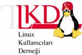

| |

Şenliğin Ardından
III. Linux ve Özgür Yazılım Şenliği ülkenin
dört bir yanından gelen katılımcıların büyük ilgisiyle 13-16 Mayıs 2004 tarihleri arasında
Ankara Milli Kütüphane'de gerçekleştirildi.
Şenliğin açılışında Cumhuriyet Halk Partisi Uşak
Milletvekili sayın Osman Coşkunoğlu, Linux Kullanıcıları Derneği Başkanı sayın
Doç. Dr. Mustafa Akgül ve LKD Etkinlik Çalışma Grubu Başkanı sayın Devrim Gündüz birer
konuşma yaptılar.
Türkiye'deki tüm penguenlerin buluşma ve kaynaşmasını
sağlayan en büyük etkinlik olma sıfatını
taşıyan şenliğe IBM Türk, Prosoft, Novell Türkiye ve Nilüfer Turizm
sponsor oldular. Kayıt masası sponsorluğu SPD, salon
destekçileri Elektrik Mühendisleri Odası ve Eliar,
bilgisayar dergisi sponsorluğu Byte, oyun turnuvası ve
dizüstü bilgisayarların temini Mavi Bilgisayar ve Mavi
Akademi, ödül sponsorlukları Meteksan NET, Görsel
Eğitim, Mavi Akademi ve kapanış partisi ise HP Türkiye
tarafından üstlenildi. Ayrıca IBM
Türk, Novell Türkiye, Prosoft, Mavi Bilgisayar, Gantek,
Oracle Türkiye, Acikkod Yayınevi, Parkyeri, UKS
şenlik alanında birer stand açtılar.
Şenlikte çeşitli konularda 3 paralel salonda yapılan 54
teknik seminerin yanı sıra, ayaküstü sohbetler,
farklı Linux dağıtımlarının kurulumları, oyun turnuvaları, hazine avı, internet
cafede Linux ile tanışabilme, katılan firmaların yetkilileriyle birebir görüşme fırsatları ve
daha bir çok etkinlik şenlik ziyaretçilerine sunuldu.
Şenlik sonunda yapılan bir tören ile "Yılın Penguenleri Ödülleri" sahiplerini buldu.
En
Çalışkan Penguen: Devrim Gündüz
En
İyi Kurumsal Kullanıcı: T.C. Merkez Bankası
En
Başarılı Özgür Yazılım Projesi:
Uludağ Ulusal Dağıtım Projesi
En
Başarılı Yerelleştirici: Nilgün Belma
Bugüner
En
İyi Özgür Yazılım: Turquaz Muhasebe
Yazılımı
En
İyi Basılı/Görsel İçerik Çalışması:
Fazlamesai.net
Oy oranlarını Sonuç bölümümüzde bulabilirsiniz.
Ayrıca LKD tarafından Sayın Doç. Dr. Mustafa Akgül'e
dernek için yapmış olduğu çalışmalarından dolayı Yüzyılın Pengueni ödülü
verildi.
Şenlik boyunca gerçekleşen oyun turnuvalarının
birincilik ve ikincilikleri ise şu şekilde:
Quake 3
A. Murat Eren
Suat Bora Ergül
Frozen Bubble
Didem Kamoy
Mustafa Karakaplan
Chromium
Turnuva birincileri Mavi Bilgisayar'dan 32Mb USB Memory Stick, ikincileri ise
yine Mavi Bilgisayardan A4Tech Optic Mouse kazandırlar.
Ayrıca şenliğin üçüncü günü Linux
Kullanıcıları Derneği 3. Olağan Genel Kurulu
yapıldı. Genel Kurul'da alınan ilk ve en önemli
karar, derneğin kamu yararına bir dernek olması
hususuydu ve oy birliğiyle kabul edildi. Ardından yapılan
yönetim kurulu seçimlerinde Doruk Fişek, Türker
Gülüm, R. Tolga Korkunçkaya, Doç. Dr. Mustafa
Akgül, Barış Metin, Barış Özyurt ve Onur Tolga Şehitoğlu yönetim kurulu üyeliklerine,
Didem Kamoy, Prof. Dr. Ethem Derman ve Devrim Seral da denetleme
kurulu üyeliklerine seçildiler.
Yönetim Kurulu ilk toplantısı sonucunda ise, Doç. Dr.
Mustafa Akgül başkanlığa, Türker Gülüm genel sekreterliğe ve R. Tolga Korkunçkaya da saymanlık
görevlerine getirildiler.
IV. Linux ve Özgür Yazılım Şenliğinin
çalışmaları şimdiden başladı, seneye daha fazla firma, daha fazla katılımcı ve daha
fazla etkinlikle yeniden görüşmek dileğiyle.
|
|